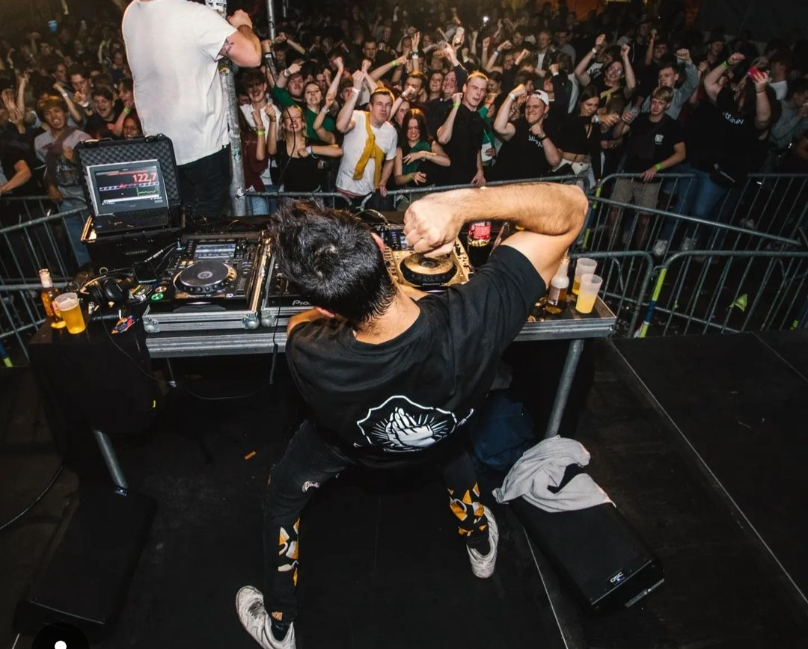

Kermisweekend
Als hoofdverantwoordelijke voor het jaarlijkse kermisweekend van KSA Beerse stond ik ervoor in om te zorgen dat alles in orde komt. Dit evenement, dat elk jaar in september plaatsvindt, is niet alleen een hoogtepunt voor de leden, maar ook voor de lokale gemeenschap. In Beerse weet iedereen ook dat KSA Beerse voor alles rondom de kermis zorgt.
De organisatie van het kermisweekend begint maanden van tevoren, en als hoofdverantwoordelijke is het mijn taak om de verschillende aspecten van het evenement te coördineren. Dit omvat het aanvragen van de benodigde vergunningen bij de gemeente en het verdelen van alle andere taken die moeten gebeuren. Deze verantwoordelijkheid heeft me geleerd hoe belangrijk het is om een goed netwerk te hebben en mensen te motiveren om samen te werken voor een gemeenschappelijk doel.
Tijdens het kermisweekend zelf heb ik gezien hoe alles samenkwam. Het was geweldig om te zien hoe het harde werk van alle vrijwilligers zich uitbetaalde in een geslaagd evenement. De livemuziek zorgde voor een energieke sfeer en het terras was ook goed gevuld met bezoekers, en tijdens de fuif met DJ's barste het feest ook los.
Van deze rol als hoofdverantwoordelijke heb ik niet alleen organisatorische vaardigheden geleerd, maar ook meer inzicht gekregen in wat het betekent om een leider te zijn. Het gaf me het vertrouwen om beslissingen te nemen en verantwoordelijkheid te dragen. Bovendien realiseerde ik me hoe belangrijk het is om een positieve sfeer te creëren waarin iedereen zich welkom voelt. Het kermisweekend heeft me niet alleen laten zien wat er komt kijken bij de organisatie van een groot evenement, maar ook hoe waardevol het is om samen te werken met anderen die dezelfde passie delen.
BEEGO
Als student heb ik de kans gekregen om te werken bij BEEGO, een bedrijf dat zich inzet om mensen te ondersteunen bij hun computerproblemen. De missie van BEEGO is helder: het helpen van mensen die moeite hebben met technologie, zodat zij de digitale wereld met meer vertrouwen kunnen verkennen.
Bij BEEGO ben ik betrokken geweest bij verschillende projecten, maar een van de meest impactvolle ervaringen was het opstarten van een samenwerking met ING. Dit project heeft als doel om klanten van ING te helpen met de applicatie en hen te begeleiden bij het gebruik van de digitale diensten van de bank. Het was een leerrijke ervaring om de opstart en de ontwikkelingen van dit project van de eerste rij mee te maken.
Op deze moment werk ik nog steeds elke week bij ING, waar ik direct contact heb met klanten die hulp nodig hebben. Dit biedt me de mogelijkheid om mijn kennis en vaardigheden verder uit te breiden. Ik leer zelf ook erg veel bij over de bankwereld, ook leer ik hoe omgaan met klanten die niet altijd even vrolijk zijn.